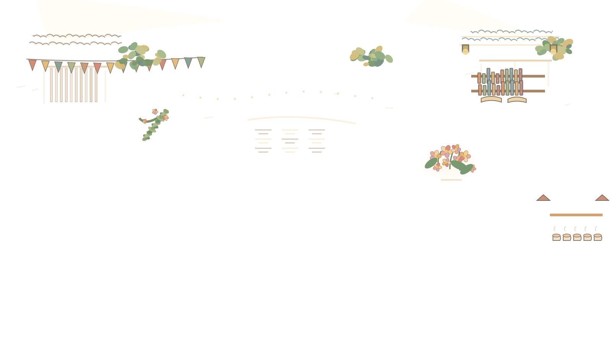

Market Lane — Bookstall component R1
Single independent 340×286 transparent facade overlay at design coordinate (1170, 8). Owner R2 road geometry is unchanged. Preview only: no sprites, collision map, game buttons, or real mobile/device acceptance.


Mock caption area — no actual game controls
Check the bookstall is visually recognizable at 568×320, its edge remains clean, and the path to the bookstall in front of it stays visible. Do not infer final art quality from this viewport scaling alone.